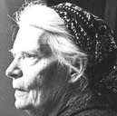
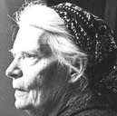
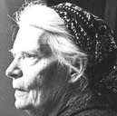
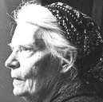

This collection of Dorothy Day's writings is for spiritual seekers and committed believers alike. Reading Dorothy Day is an invitation to explore what it means to lead an authentic human and Christian life in our time.
Explore Dorothy Day's writings on war and peace | justice | pacifism | poverty | faith | nonviolence | conscience | work | the works of mercy | hospitality | community | the mystical body of Christ | the little way | saints | prayer | hospitality | liturgy | and much more.
This site can be viewed on monitors, tablets, and smart phones. You can download articles in these file formats: PDF, DOCX, HTML, and MD (markdown).